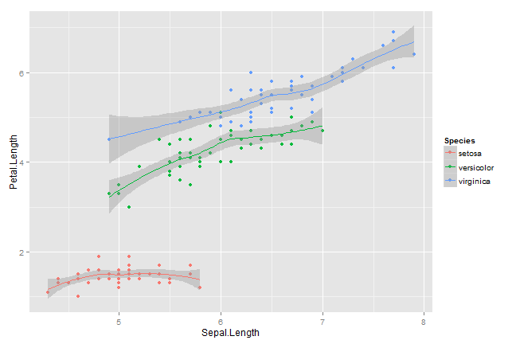

Using Impress.js Framework for Presentations
Created using Slidify
Task at hand
- Impress.js provided an impressive framework but creating boring presentations for classes was difficult using the style sheet.
- So, attempted to create a custom one for some basic functionality by taking elements from the impress.js demo css, io2012 sample css, and some html tags.
- This code can be improved upon in a significant manner.
Ordered list
This list should be ordered
-
1. Point 1
2. Point 2
3. Point 3
Unordered with bullet points
This list should be unordered with bullet points
- Point 1
- Point 2
- Point 3
Unordered with neither bullets nor numbers
This list should be unordered with neither bullets nor numbers
Point 1
Point 2
Point 3
Two column slide
This is a slide with a two column layout.
| Column X | Column Y |
|---|---|
| Row 1 of Column 1 | Row 1 of Column 2 |
| Row 2 of Column 1 | Row 2 of Column 2 |
Two column slide with only one row?
Whether borders are visible are not can be controlled using the css sheet
| Column X | Column Y |
|---|
Three Columns here
Three column table here, with one entry being a link to the R-Project
| Column X | Column Y | Column Z |
|---|---|---|
| Row 1 | Row 1 | Row 1 |
| Row 2 | Row 2 |
Some R code and output
Head of iris
head(iris)
## Sepal.Length Sepal.Width Petal.Length Petal.Width Species
## 1 5.1 3.5 1.4 0.2 setosa
## 2 4.9 3.0 1.4 0.2 setosa
## 3 4.7 3.2 1.3 0.2 setosa
## 4 4.6 3.1 1.5 0.2 setosa
## 5 5.0 3.6 1.4 0.2 setosa
## 6 5.4 3.9 1.7 0.4 setosa
Tail of iris
tail(iris)
## Sepal.Length Sepal.Width Petal.Length Petal.Width Species
## 145 6.7 3.3 5.7 2.5 virginica
## 146 6.7 3.0 5.2 2.3 virginica
## 147 6.3 2.5 5.0 1.9 virginica
## 148 6.5 3.0 5.2 2.0 virginica
## 149 6.2 3.4 5.4 2.3 virginica
## 150 5.9 3.0 5.1 1.8 virginica
Code and a plot
library(ggplot2)
ggplot(iris, aes(x = Sepal.Length, y = Petal.Length, color = Species)) + geom_point() +
geom_smooth(method = loess)

Embedding another page
Embedding a Video
Let's watch the newly created video about R from Revolution Analytics
Acknowledgements
- Bartek Szopka for Impress.js
- Eric Bidelman and Luke Mahe for Google IO 2012
- Ramnath Vaidyanathan for adapting the above frameworks for Slidify and for his prompt responses to queries
- The generous R-community